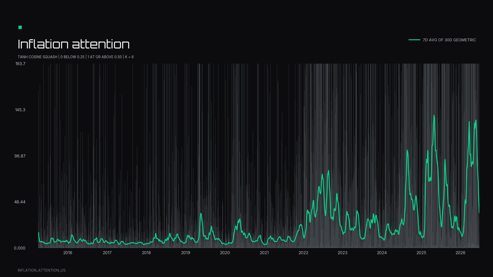

Open-source Python library
Turn web text into semantic stock betas.
semantic-factors turns NOSIBLE World event text into inspectable semantic factors. Define a concept with sentences, export a daily signal, and estimate stock-specific betas from aligned returns.

Inflation attention is a worked example of US coverage of prices, costs, and inflation expectations becoming a daily numeric signal.